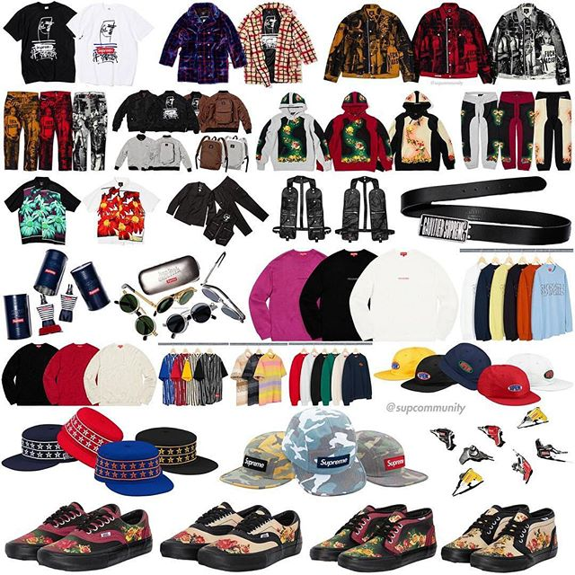

Droplist:

Дроп 11
Чудовий дроп нам знову показали Supreme. Топовий айтем Grand Prix Parka розібрали всього за 2.6s. До кінця не показували колаб з Champion, але зараз ми можемо побачити круту співпрацю з цим брендом
Дроп 10
Дуже своєрідні, та нічим не уступаючі іншим, айтеми були у сьогоднішньому дропі. Не всім по душі прийдеться такий стиль, але команда Supreme співпрацює з різними брендами та дизайнерами щоб добавити нових кольорів в цей сірий світ. Це наглядний приклад тому що колись сказав основоположник бренду Supreme Джеймс Джеббіа: "Я хочу створювати щось таке, щоб шопінг підлітка в компанії батьків відбувався приблизно так: "Мам, послухай, може тобі не варто заходити сюди зі мною."
Дроп 9
Просто за лічені секунди розлетівся сьогоднішній дроп, що не дивно, адже айтеми були реально крутими. Щотижня ми бачимо все цікавіші речі, які для нас готує команда Supreme. І, напевне, ще довго вони будуть вражати цікавими новинками.Найбільш хайповими айтемами стали худі та тішка в колаборації з компанієї Swarovski, які розкупили практично за 5 секунд. Swarovski - це австрійська компанія, що спеціалізується на виробництві прикрас зі скла(кришталю). Рітейл становив за тішку 398$, а худі 598$ та уже зараз рессел виріс більше ніж у три рази(тішка 1,223$, а худі 1,900$).
Дроп 8
Приблизно половина від повної кількості дропів у цьому сезоні вже вийшло в світ. Були хороші та не дуже, але креативні ідеї команди Supreme все більше дивують нас різними айтемами. Бувають колаборації, які подобаються далеко не всім (наприклад як попередній дроп), але потрібно розуміти, що такі співпраці зроблені для того, щоб не залишити в стороні людей яким до вподоби такий стиль. Supreme - це компанія, яку стараються зробити цікавою для поцінувачів різних субкультур